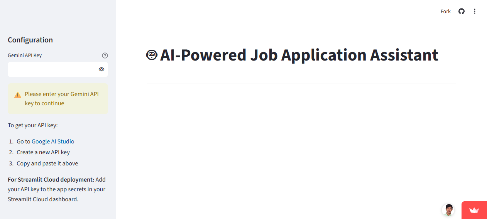

AI Job Application Assistant
Three AI copilot tools in one app: resume optimization, personalized cover-letter generation, and job-compatibility scoring — combining LLM generation with classical ML analysis so the advice is grounded in measurable skill gaps, not just fluent text.

01 The problem
Tailoring a resume and cover letter for every job description is slow, and candidates rarely know which skills actually block them. Pure-LLM tools generate fluent but ungrounded advice; the goal was to pair generation with measurable analysis.
02 Architecture
resume + job descriptiondocument parserLLM rewrite / generateML fit scoringskill-gap report
- Document ingestion: PyPDF2 and python-docx parse uploaded resumes into clean text for downstream stages.
- Role-targeted prompting: Gemini 2.0 Flash rewrites the resume and drafts cover letters against the specific job description, not a generic template.
- Compatibility scoring: scikit-learn computes a resume-to-JD fit score, so the LLM’s qualitative advice is anchored to a quantitative signal.
- Skill-gap analytics: missing skills are extracted and visualized with Plotly, with progress tracking across applications.
- Interface: Streamlit keeps the whole pipeline interactive and deployable in one artifact.
03 Results
3copilot tools
ML + LLMhybrid pipeline
livestreamlit cloud
A working example of the hybrid pattern — LLM for generation, classical ML for measurement — shipped end-to-end: parsing, prompting, scoring, visualization and deployment.
04 Stack
Gemini 2.0 FlashLLM Pipelinesscikit-learnPlotlyPyPDF2python-docxStreamlit